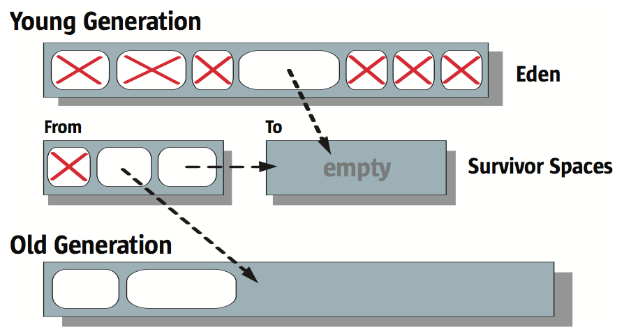
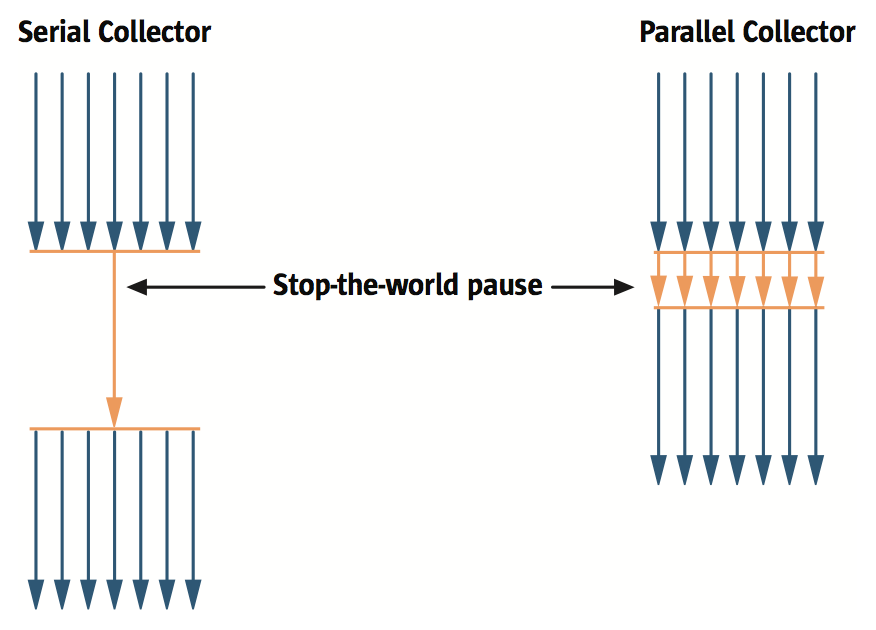
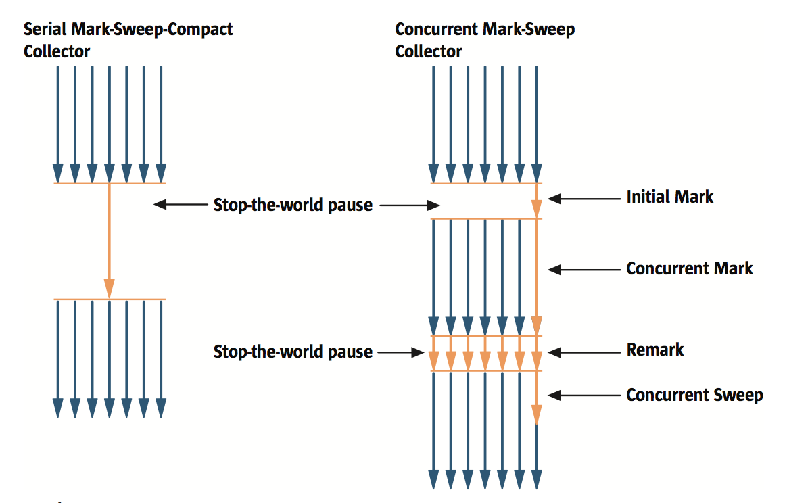

Java HotSpot Virtual Machine 的垃圾回收机制
本文是Memory Management in the Java HotSpotTM Virtual Machine (2006) 一文的阅读笔记。
Table of Contents
背景知识
显式内存管理的问题
显式内存管理指由程序员来管理内存。然而内存管理这一任务本身非常复杂，程序员经常在这上面犯错误导致错误的程序行为乃至崩溃。这方面常见的错误有两种：一种叫悬空引用（dangling reference），即程序员把一个还可能用到的对象给回收了，然后又把这块空间分给了别的对象，那么尝试访问那个被错误回收的对象就会得到错误的值；另一种叫空间泄漏（space leak），与前者正好相反，是有一个对象已经不需要了，但由于某些原因程序员没有把它的空间给回收掉，从而造成空间浪费，严重的话还会导致内存被这样无意义地消耗光。
解决这两个问题的方法就是使用一个专门的程序来分析和收集内存中的垃圾，即垃圾回收器（garbage collector）。
垃圾回收基本概念
垃圾回收器（以下简称 GC）的职责如下：
- 分配内存，
- 确保所有被引用到的对象都呆在内存里，
- 把已经不被引用的对象从内存中移除出去以恢复内存空间。
其中被引用或者不被引用指的是在当前执行的代码中是否还有相关的可到达该对象的引用。
GC 不能解决比如，你创建了一个对象，后来你再也不用它了但是你的程序一直保持着该对象的引用这种问题。
具体的算法和执行垃圾回收的时间取决于 GC，使用它的程序员不需要知道相关的细节。
对 GC 的需求
GC 应当安全且全面。即不会释放掉还活着的数据，也不会执行几遍也回收不掉某块该被回收的垃圾。
GC 应当是高效的。比如，不能暂停很长时间导致原本的应用程序在这段时间内都无法运行。
GC 应当尽量避免内存碎片化。碎片化的后果就是，很多次回收以后有一个新对象请求内存，内存中明明有充足的空间但却偏偏没一块足够大的连续空间容得下它。
GC 还必须是 scalable 的。无论分配内存还是收集垃圾，都不应该成为多线程应用或多核系统的性能瓶颈。
GC 设计中的抉择
- 串行还是并行。串行的 GC 不能受益于多 CPU，而并行的 GC 往往会更加复杂且更容易出现碎片。
- 同步还是暂停。暂停式（stop-the-word）的 GC 会在进行垃圾回收时完全停止原本应用程序的执行；同步式（concurrent）的 GC 中垃圾回收将和应用程序同时运行——不过通常来说只是在做大部分回收工作时，也就是说即使同步式的 GC 也可能会暂停应用程序的执行。暂停式的 GC 较为简单，因为暂停时整个堆里的数据不会再发生改变了，但是这个暂停的时间可能对某些应用程序来说是不能容忍的；同步式的 GC 暂停的时间比较短，但由于需要处理同时还可能被更新的数据，这些开销可能会导致总体上的性能比暂停式的要差一些，需要的堆的大小也可能更大一些。
- 压缩，不压缩，还是拷贝。注意这里的压缩指的是 compact 而不是 compress ，即在垃圾收集后把所有幸存的对象挪到一起，以增加可以利用的连续空间的大小，这种方法可以使以后分配内存更简单、快速；不压缩的话垃圾收集可以完成得更快一些，但是可能会导致碎片化，导致以后分配内存比较麻烦；还有一种方法是把所有幸存者拷贝到另一块内存区域，这样现在的区域就空掉了，以后分配内存就非常简单了，当然坏处就是拷贝要花时间，而且需要额外的内存空间。
评估 GC 的性能指标
评估一个 GC 的时候需要考虑以下的性能指标：
- 吞吐量（throughput）。在较长的一段时间内，不是花在 GC 上的时间占总时间的百分比。
- GC 开销（garbage collection overhead）。100% 减去吞吐量。
- 暂停时间（pause time）。由于 GC 而应用程序被停止执行的时间。
- 收集频率（frequency of collection）。GC 相对于应用程序的执行发生的频率。
- 占用空间（footprint）。比如堆的大小。
- 迅速性（promptness）。从对象变成垃圾到对应空间被回收的时间。
分代垃圾收集
分代垃圾收集（generational collection）将内存分为几代（generation），每一代保存不同年龄的对象。比如，最常见的做法是分为两代：年轻代和年老代。
将内存分代以后可以在不同的代上，根据这一代的特点，运用不同的垃圾回收算法。分代垃圾收集利用了一个叫弱分代假设（weak generational hypothesis）的观察，即对许多应用程序——包括用 Java 写的——来说：
- 大部分分配的对象都活不久，
- 很少有从年老的对象到年轻的对象的引用。
因此通常年轻代上的垃圾回收算法的主要考量是速度，因为年轻代上需要经常进行垃圾回收；年轻代上的对象存活一定时间后会被提升甚至永久保存到年老代，年老代的大小增长较慢，因此不经常发生垃圾回收，通常在其上面采用的算法更重视空间上的高效。
J2SE 5.0 HotSpot JVM 上的 GC
HotSpot 上的分代
Java HotSpot VM 将内存分为三代：年轻代（young generation），年老代（old generation），和永生代（permanent generation）。大部分对象都出生于年轻代，熬过一定轮数残忍的垃圾回收之后被提升到年老代——不过也有些比较大的对象可以直接出生在年老代。永生代一般放的是比如描述类和方法的对象还有类和方法本身。
年轻代又由伊甸园（Eden）和两个幸存者区域组成。大部分对象出生于伊甸园，而幸存者区域中则是至少熬过了一轮垃圾回收的对象——通过幸存者区域，那些年轻对象在被提升到年老代之前被赐予了更多次死掉的机会……在任何一个时间点，两个幸存者区域中只有一个是有东西的（另一个是空的）。
当年轻代快满的时候仅在年轻代上运行垃圾回收的算法；而当年老代或者永生代快满的时候，会在所有代上（包括年轻代）执行垃圾回收算法。其中年轻代有其独自的垃圾回收算法，而年老代和永生代则使用一套相同的算法。通常年轻代上的算法先执行。不过有的时候可能年老代太满了没法接受从年轻代上提升过来的对象，这时候年轻代上的垃圾回收算法不再运行，而是在整个堆上跑年老代的算法——后面将会提到的CMS收集器除外。
快速内存分配
在接下来将要提到的算法中，通常都有较大的连续内存块可以分配，这种情况下的内存分配，利用 bump-the-pointer 技术，是非常快的。具体来说就是保存上一次分配掉的内存的尾部地址，需要分配新的空间时，检查空间是否足够，如果足够，更新指针再初始化那个对象就好了。
对多线程应用来说，内存分配必须是线程安全的。如果用全局锁的话无疑内存分配会变成性能瓶颈，因此 HotSpot VM 使用了一种叫 Thread-Local Allocation Buffers (TLABs) 的技术，即把内存划分成几个 buffer，每个线程一个单独的用来分配内存的 buffer，然后每个线程在这个 buffer 上 bump-the-pointer 就好了。不过偶尔有些线程可能会用光自己的 buffer，这时候还是需要同步的。HotSpot VM 用了许多技术来确保使用 TLABs 造成的内存浪费很小——不过用了怎样的技术文章里没说。
各种版本的垃圾回收器
串行回收器
串行回收器（serial collector）是暂停式的、串行的，在年轻代使用拷贝方法，在年老代 / 永生代使用压缩方法的垃圾回收器。
- 年轻代
串行回收器中的年轻代垃圾回收过程如下面的图中所示。在垃圾回收中，伊甸园（Eden）中活下来的对象会被拷贝到图中标记为 To 的幸存者区域——太大放不进去的则被直接提升到年老代。标记为 From 的幸存者区域中还存活的对象中相对较年轻的也会被拷到另一个幸存者区域，而相对较老的则提升到年老代。在一轮垃圾回收之后，伊甸园和之前含有对象的幸存者区域就都变空了。

Figure 1: 串行回收器年轻代垃圾回收过程示意图
- 年老代 / 永生代
年老代和永生代上使用mark-sweep-compact 算法。在 mark 阶段，回收器标记出活的对象；在 sweep 阶段，释放垃圾；在 compact 阶段，把所有活着的对象往这一代的开头区域挪，这样另一头就完全是空的，这样就可以 bump-the-pointer 1。
并行回收器
并行回收器（parallel collector）是暂停式的，在年轻代使用并行的拷贝方法，而在年老代 / 永生代依旧使用串行的压缩方法的垃圾回收器。
- 年轻代
方法类似于串行回收器在年轻代的算法，不过改成了并行算法以利用多 CPU 2。如下图所示。

Figure 2: 并行与串行垃圾回收方法的比较
- 年老代 / 永生代
方法和在串行回收器中完全一样。
并行压缩回收器
并行压缩回收器（parallel compacting collector）是暂停式的、并行的，在年轻代使用拷贝方法，在老年代 / 永生代使用压缩方法的垃圾回收器。
- 年轻代
方法和并行回收器在年轻代的算法一样。
- 年老代 / 永生代
首先，每一代的内存区域都被分为逻辑上的固定大小的区域。然后垃圾回收分为三个阶段：
在 marking 阶段，首先把初始可抵达的所有活的对象分配给所有垃圾回收的线程，这些线程并行地标记所有活着的对象。而后在 summary 阶段，GC 会一个一个区域（区域指我们之前划分的固定大小的区域）地扫描，评价把这个区域往开头方向移动所能获得的空间相对移动它们的代价是否值得，如果值得，将会在第三阶段移动它——在这一阶段 GC 仅仅标记每个区域在 compact 后的新位置。 注意这个阶段其实是串行的。3 在 compaction 阶段，利用前一阶段产生的数据移动需要移动的对象，这一过程是可以并行的。
同步标记-清扫（CMS）回收器
同步标记-清扫回收器（concurrent mark-sweep collector，以下简称CMS）是用来解决在年老代 / 永生代上进行垃圾回收可能发生的长暂停问题的，所以它又被称作低延时回收器（low-latency collector）。
- 年轻代
方法和并行回收器在年轻代的算法一样。
- 年老代 / 永生代
CMS 在这两代上的垃圾回收算法在 大多数 时候是和应用程序同步运行的。
CMS 每次回收开始时会先短暂地暂停应用程序，标记所有从应用程序中直接可达的对象，这一阶段被称作 initial mark。然后它会在下一个阶段，在应用程序运行的同时，标记出所有内存中存活的对象，这一阶段被称作 concurrent mark。不过显然在 concurrent mark 的过程中还会出现新的对象，它们在 GC 开始收集垃圾时可能也是存活的，必须也把它们找出来，所以在 concurrent mark 结束后，CMS 会再次暂停应用程序，重新访问所有在 concurrent mark 中被更改过的对象进行标记，这一过程被称作 remark。由于 remark 会暂停应用程序，效率比较重要，因此这一过程是并行的。在 remark 阶段之后，所有活的对象都被保证标记出来了，接下来就可以用一个与应用程序同步运行的程序把所有垃圾回收掉了。 过程如下图所示。

Figure 3: 串行与 CMS 方法比较
需要注意的是，与其他回收器不同，CMS 在这个阶段是不压缩（compact）数据的。因此在分配空间时需要维护一个 free list，然后在 free list 当中搜索足够大的空间，因此不能像其他回收器那样快速地分配空间。此外 CMS 往往需要比其他回收器更大的空间，一是因为在垃圾回收的过程中内存中的对象还会增加，此外在标记的时候 CMS 并不能保证所有垃圾都能被及时清除（它只保证所有存活的对象都被标记），也就是要等到下一次垃圾回收才行。此外由于 CMS 还要有 remark 的过程，其运行的总开销其实比其他回收器要大。
由于 CMS 是不压缩的，可能会出现碎片化的问题，因此它会统计通常情况下对象的大小，预估需求，然后在适当时机分开或合并一些空闲内存块。
CMS 的运行时机不是年老代或者永生代快满的时候，而是提前进行。具体时机则是根据一个基于时间的统计——看数据增长得多快。
其他
Java HotSpot VM 还自动选择回收器类型、堆大小的方法，用户只需要提供自己的需求，不需要亲自调整各种参数。
此外文章提到了一些用于评估 GC 方法性能的工具，如有需求可以查看。